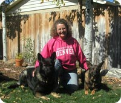
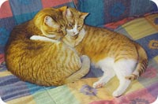

About Us
 Welcome to my web site! I’m Shellie Baker, and I have been the owner of Watchdog since 1983.
I started this business when it became apparent to me how stressful it was for my own pets to be left at a boarding facility, and felt that other pet owners had the same concern. My clients tell me how much happier their pets are staying in their own home in familiar surroundings. They feel better not exposing their animals to stress and potential for disease. They also appreciate the convenience of not having to transport their pets, plus knowing someone is keeping an eye on their house while they are away.
 Dogs, cats, fish and a horse have always been a part of my family, and I now have two beautiful German Shepherds that are my constant companions. I have many years of experience in caring for other people’s animals, and have thoroughly enjoyed it! It has always been important to me that I treat other peoples pets like they were my own, and I have dedicated workers that feel the same way. Please contact me if this is important to you, as well! I would love to meet you and your family!! References are available, on request.
Dogs, cats, fish and a horse have always been a part of my family, and I now have two beautiful German Shepherds that are my constant companions. I have many years of experience in caring for other people’s animals, and have thoroughly enjoyed it! It has always been important to me that I treat other peoples pets like they were my own, and I have dedicated workers that feel the same way. Please contact me if this is important to you, as well! I would love to meet you and your family!! References are available, on request.